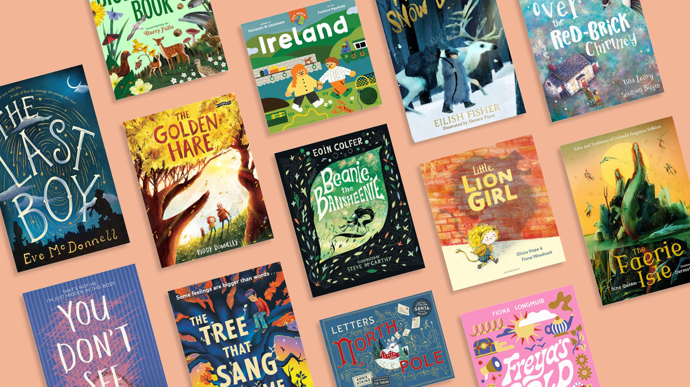

Book List
Helping parents find the right books for their child's reading level, and stay with it.

Context
Book List helps parents discover curated book lists suited to their child's reading level and track progress. It targets the gap between wanting to raise a reader and knowing what to actually hand the child next.
Problem
Parents who care about their child's reading run into three things at once:
- Too many book choices, with no way to judge which fit their child.
- No clear view of whether progress is happening.
- Reading turning into a chore for both sides once it becomes a tracked obligation.
The third one is the trap: most tracking tools solve visibility by adding pressure, and pressure is what makes a child stop reading.
Users and research
I used the Jobs to Be Done framework to get underneath the feature requests. The core job: when I'm helping my child build strong reading habits, I want to discover curated books suited to their level and interests, so I can track progress and know they're reading the right material.
- Functional job: find and organise books effectively.
- Emotional job: feel confident and proud guiding literacy growth.
- Social job: be seen as an engaged, supportive parent.
A finding that shaped the product: parents preferred pre-curated lists over algorithmic recommendations. They wanted a trustworthy human judgment, not a better ranking model.
Strategy
Four pillars, each tied back to a job:
- Guided onboarding — introduce curation, tracking and milestones progressively rather than all at once.
- Curated discovery by grade level, mood or theme, and learning goal.
- Intuitive progress tracking — To Read, Reading, Done.
- Motivation through ratings and achievements — completion percentage, ratings breakdown, most-read genre, lists completed.
Key decision: I cut progress tracking from five states to three after testing. The extra states were more accurate and measurably worse to use — they made parents stop and classify instead of just logging. Accuracy of the data lost to likelihood of the data being entered at all.
Key decision: curation over personalisation. An algorithmic recommender is the more defensible long-term moat, but it was the wrong MVP: it needs data the product does not have yet, and it answers a question parents said they did not want answered by a machine.
From ideas to implementation


Outcome
The MVP definition balanced delight against core value delivery:
- Simple: minimal steps from discovery to tracking.
- Encouraging: language and visuals celebrate progress.
- Empowering: parents feel in control.
If the app has shipped or been tested with real parents, add numbers here: users, books tracked, retention after week one, or how many testers completed onboarding. If it is still a concept, say so plainly — a well-reasoned concept is credible, an unlabelled one is not.
What's next
- Custom book lists
- Share and discover lists
- Sign-in and multiple profile support
- Teacher-recommended lists and tracking
What I took from it
Progressive disclosure and celebrating small wins kept parents feeling capable instead of monitored. The hardest product decision was removing accuracy to get adoption.